Date Published (07/08/2021 06:13 PM)
Welcome to my Mount and Blade Journey! This is not a fresh playthrough, rather this is me
simply writing about my current on-going playthrough!
For a "pilot episode" this ends quite disasterously for me. Let's start introductions! In the war-torn
landmass of Calradia laid a humble warband of a hundred men. Lead by a man in steel armor with an imposing
war-mask.
That leader is Sean:
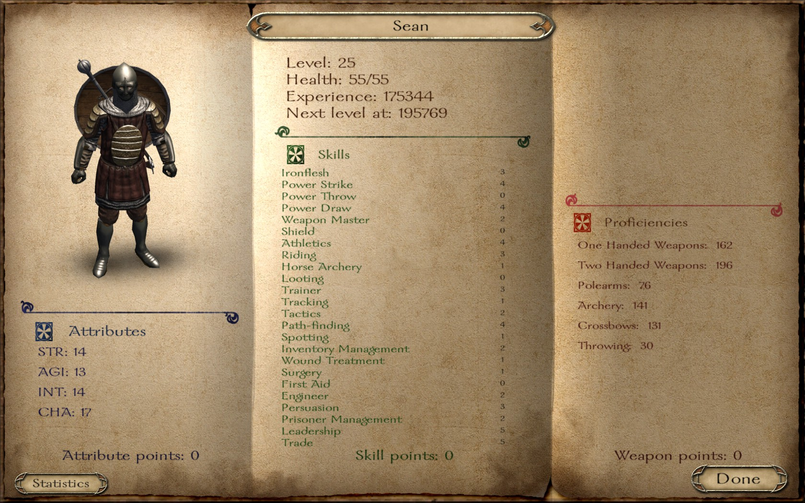
Not being the greatest warrior, he is an opportunist. Honorable on a whim, and monster in some instances. While
his journey began quite well, only recently he had begun to find success. Recently opening several dyeworks and
businesses to the point where he is no longer in the red while paying for his warbands' wages.
With a hundred well-armed and trained men, surely Calradia would fall to his knees! In time of course. Sean is ensigned
to a mercenary contract for the Kingdom of Rhodok, merely because of his previous history with the country.
Once upon a time, Sean was a vassal for King Graveth and owned the fief of Jelkala. That was the Sarranid Sultante declared
war. Through the campaign set in the fall of 1257, Sean and the Counts of Rhodok fought against the Sultante. Unfortunately it
was realized too late that Sean believed the kingdom was ill-prepared for war. One fateful day, Sean had attempted to defend the
fief of Jelkala from the Sarranid Sultante. Unfortunately the Sarranids came with over 300 men, whilst Sean isolated from the remaining
Counts stood his ground with a mere 80 men.
Unfortunately as of late Sean had been facing a dry spell. Battles had been leading into a great many number of defeats against the vast armies
of the Sultante. It was after the siege of and the loss of his fief that Sean was taken prisoner, and from that point forth swore vengence
against the cursed Sarranids.
Upon his escape, he renounced his vassalship for fear of his life, and instead decided to become a mercenary for the kingdom.
Unfortunately no one said Sean was a very wise man. Still seething over his embarrassing defeat, Sean was insulted over the newly announced truce between
the Kingdom of Rhodok and the Sarranid Sultante. He decided to take matters into his own hands. Over several passing weeks he would harass the
villages of the Sarranids, and once his warband grew, he began hunting small detachments of Sarranid armies. Emerging victorious for many of them.
To Sean's expectations, this results in war incited between the Kingdom of Rhodok and the Sarranids. Understandably King Graveth was quite pissed,
and after a couple of weeks, another peace treaty was signed.
Fast forward some time, the most recent event of note was the capture of Suno by Sean and various counts of the Kingdom of Rhodok. Due to the orders
of Count Kurnias, attempted to incite a war between the Khergit Khanate. Unfortunately this plan didn't work, however they are aggressive against Sean for the
raids that were done against villagers.
At this point in time Sean has a reputation for beating many leaders of the Khergit, and particularly the Sarranid Sultante.
Resuming from present day, Sean had been attempting to train and level his men, and had been travelling around the northern part of Calradia.
He had discovered a band of deserters and decided to go for some easy pickings.
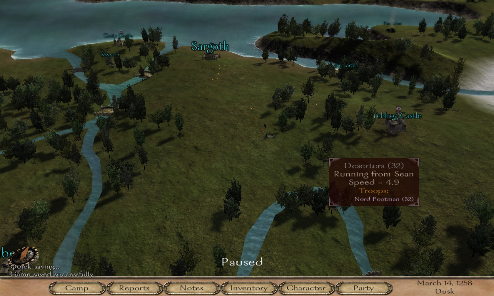
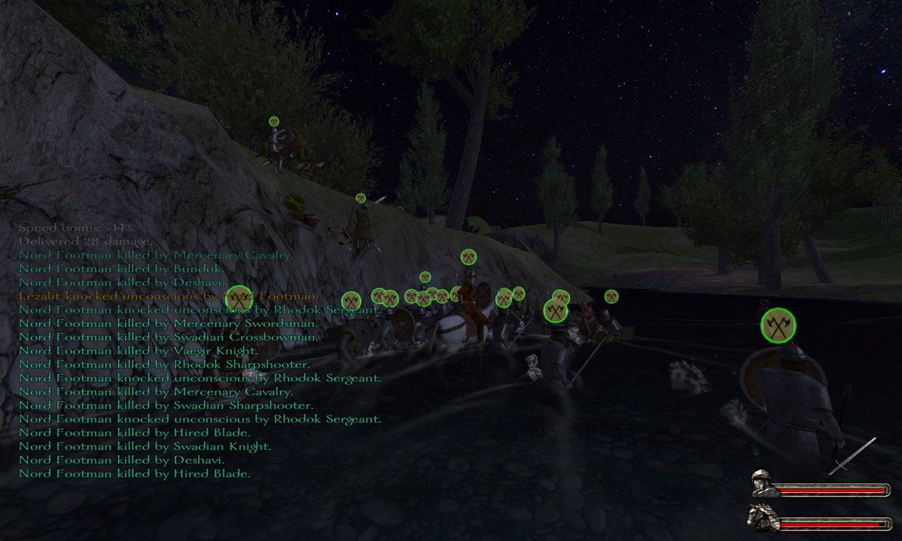
Expectedly, the deserting Nords were slaughtered and crushed by this band of warriors.
Oh cool! The weekly account has been settled! Still in the green.
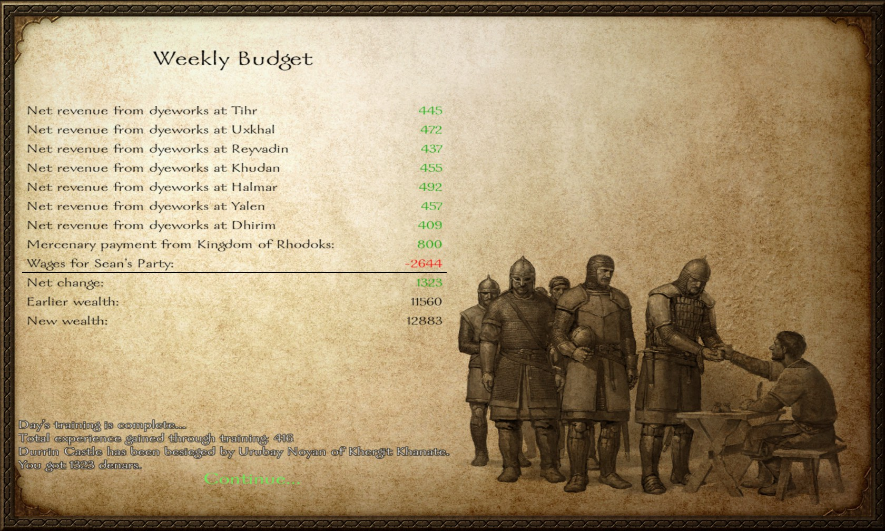
Anyways, being quite bored over the state of affairs and itching for a battle. Sean finds the Boyer Dhashwal alone on a patrol. As
is usual for him, he decides to go ahead and battle the Boyer.
Cursed snow-blindness... This battle of 36 against 100... Goes as about exactly as you'd expect. A one-sided slaughter.
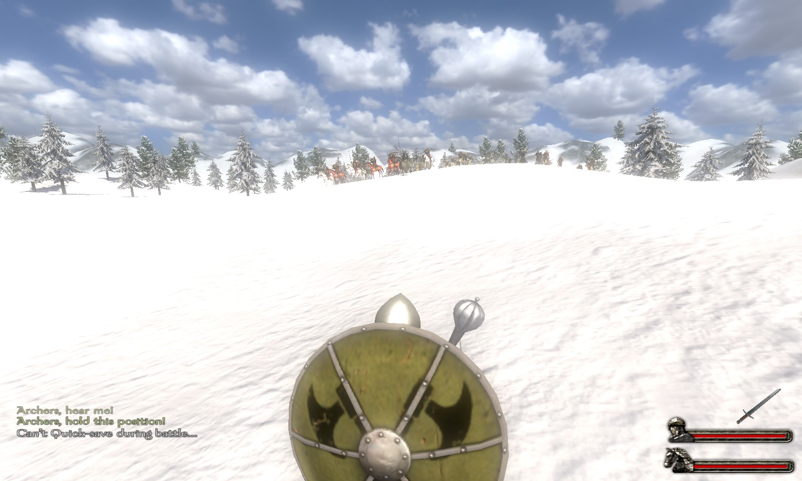
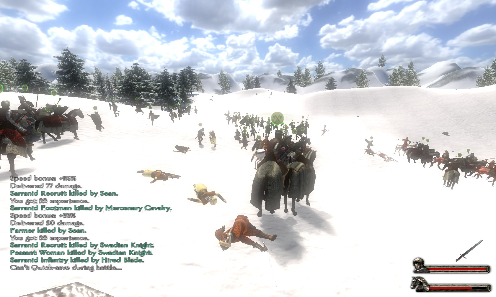
Having scratched his minor itch for battle, Sean quickly discovers that the Kingdom of Swadia had declared war on the
Kingdom of Rhodoks! This might be bad for our many Swadian soldiers... Of course, as I discovered, this would be bad in
more ways than forcing brothers against each other.
Sean decides to travel southwards back into Rhodok territory when he encounters Count Despin's Party. Hoping to peck off a few forces,
he wonders if he can pursue them. However Count Reland orders for Sean's appearance. So he heads towards Uxkhal where a healthy
amount of men are stationed. Seemingly preparing for a siege.
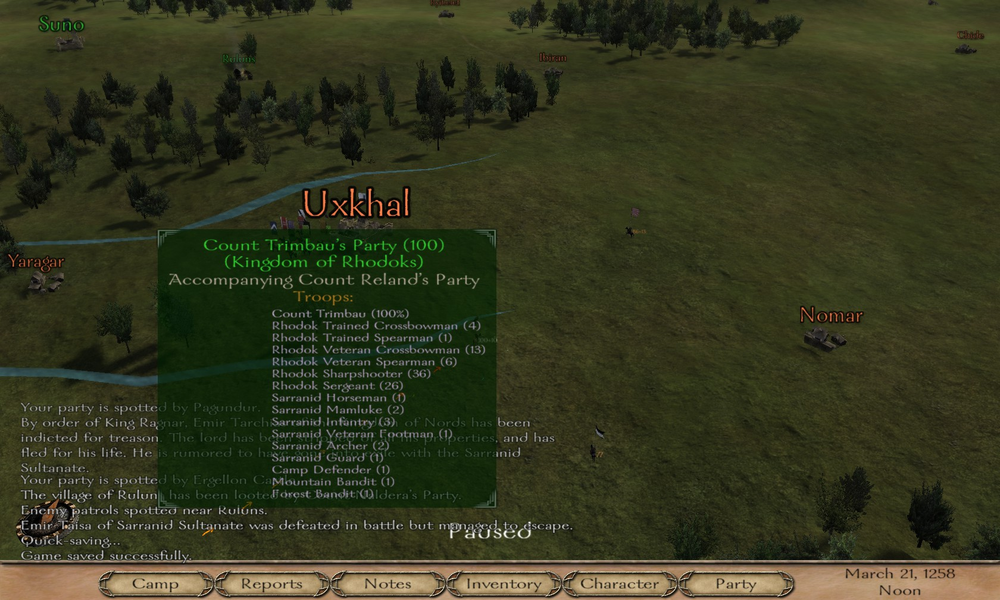
Reland asks for Sean to follow him, and requests him to scout several times. He declines as he finds the work quite menial and frankly boring. Eventually
he gives up following Reland's party and ventures into the wild, searching for more warbands to level his soldiers.
Unfortunately he gets exactly what he asked for, as Swadian Raich approaches.
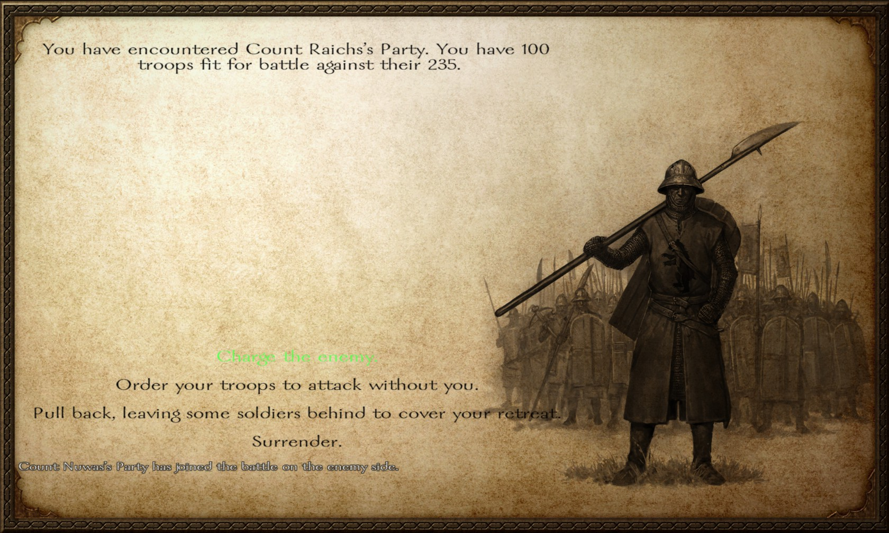
Shit! Now he'll see what it's like to be on the other side of a massacre. Hundreds of Swadians line up on the other side of the field as Sean's mercenaries
approach a hill. Seeing the numbers, in spite of all sense of self-preservation, he orders his men to battle as they always had. As best as he could afford to
anyways.
Charging on his Courser he tries to peck off archers as in his experience he found them (and Calvarymen) to be amongst the most dangerous of his adverseries. While
the battle was violent and bloody. Sean and his party were at the very least seeming to manage against the first detachment. Bodies strewn across the battlefield,
while horses without their riders gallop wildly. A chaotic confusion in the battlefield as any remaining semblance of tactics disappeared.
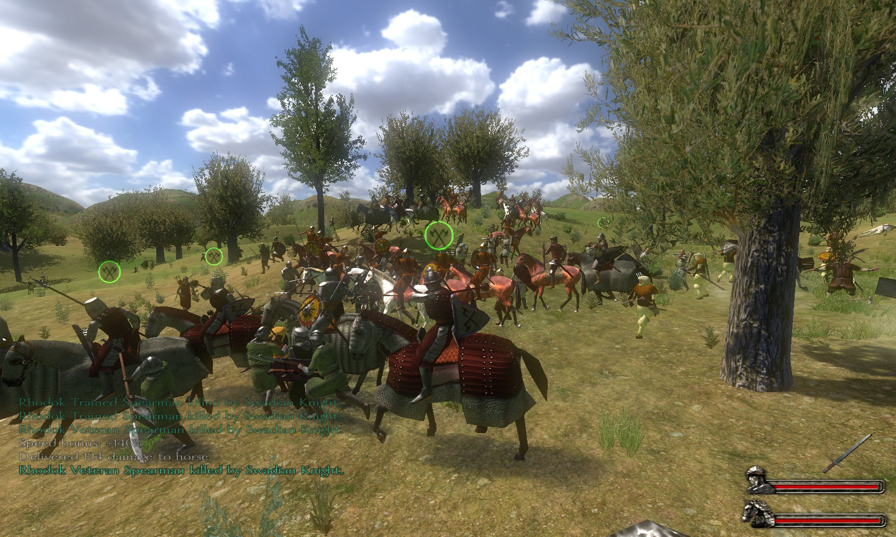
Of course, this was only the first detachment. While not to his surprise, but very much to his horror. He witnessed the second half of the 250 men approaching.
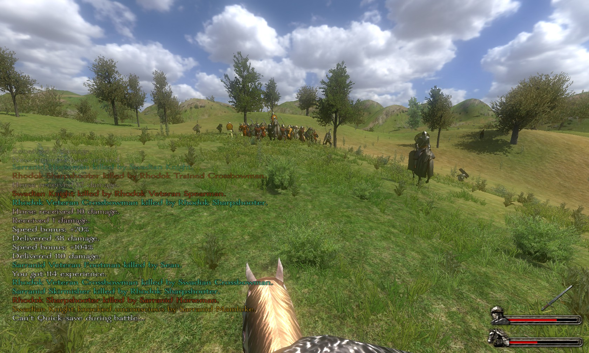
After the first initial defeat, Sean recovers enough to try one last stand...
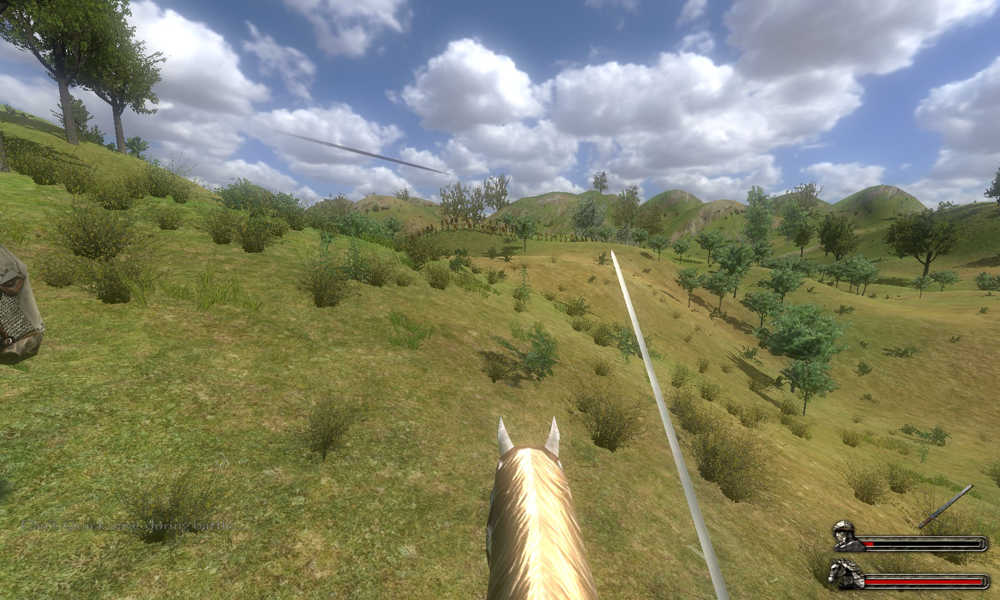
16 men against 86... While the party had done quite a number, all it took was a single arrow to knock Sean off his horse unconsious.
Upon recovery, he decided his life was worth more than honor, and he fled.
Unfortunately the Count was quite persistent, and eventually caught Sean. The bastard! Seeing no choice as fight or not would end in defeat. He decided to follow
what would've happened anyways...
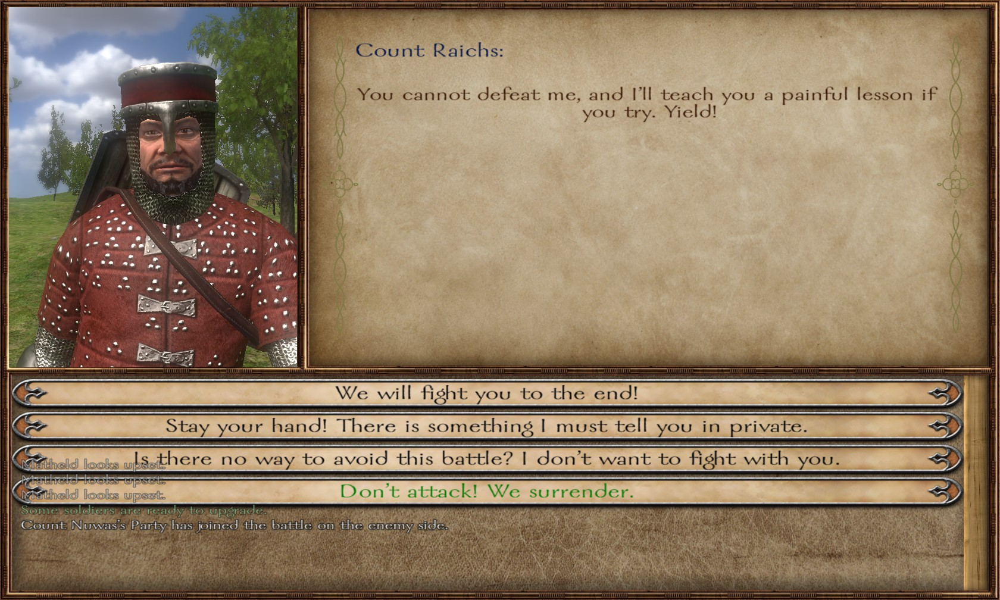
Upon surrender Sean had lost nearly all of his companions. Fortunately he was left his arms and armor. With a meager 3 men, he had to set out and rebuild his
warband again. The only solace taken was that he would consistently make a 3000 denar profit each week due to the lack of wages to pay.
So with this in mind, Sean had a set out across the few non-hostile villages (which basically only included the Kingdom of Rhodok and the Nords) and attempted to
recruit villagers. Along the way Sean had to battle yet another Count.
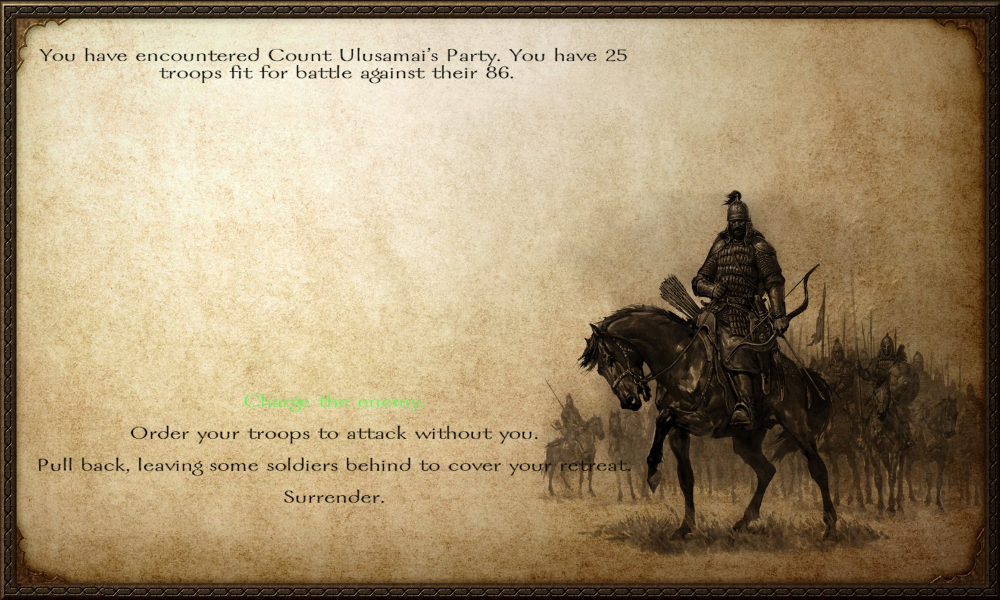
Sean unfortunately recognizes that this is not a Swadian. Rather a former Emir, who had defected from the Sarranids. However he can honestly remember if this was one of
the many Emirs he battled, and nor did he care. Foreseeing this would be another lopsided massacre, Sean sacrifices a few men and flees with the survivors.
Unfortunately this has proven to be quite the bad Spring, as in spite of this the Emir caught up, and decided to beat the living shit out of his party.
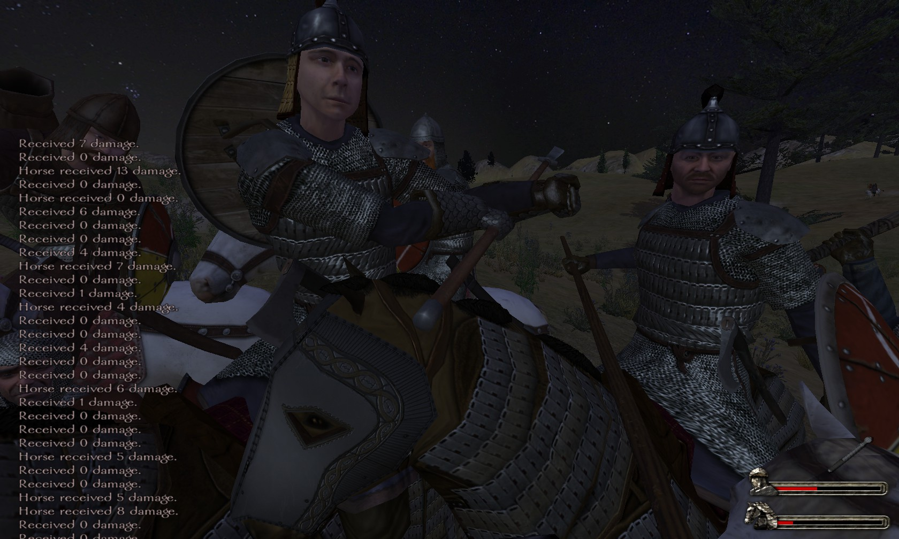
Fortunately this time, Sean survives without getting held prisoner, and escapes. Continuing his recruitment of soldiers. He believes he should recruit as many Rhodok crossbow
men, and find as many calvarymen to compensate against his enemies.
Yet again however, he is accousted by yet more armies...
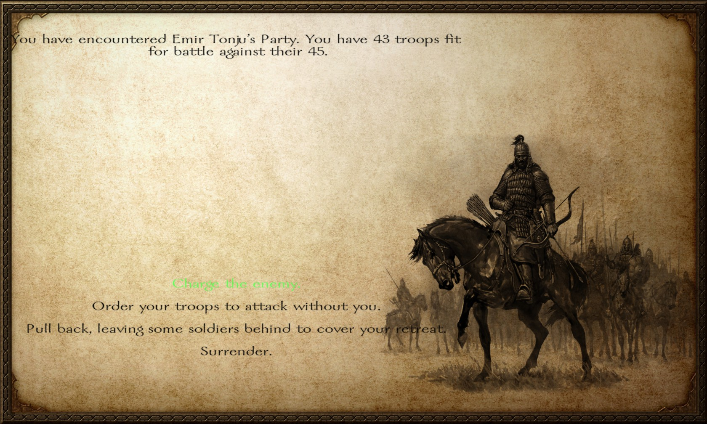
Unfortunately I cannot recount whether I actually won this or not... All I recall is that I was not taken prisoner after the first time. After the scars of March and Feburary,
Sean continues his goal of recruiting more and more men.
This episode concludes with the final party composition:
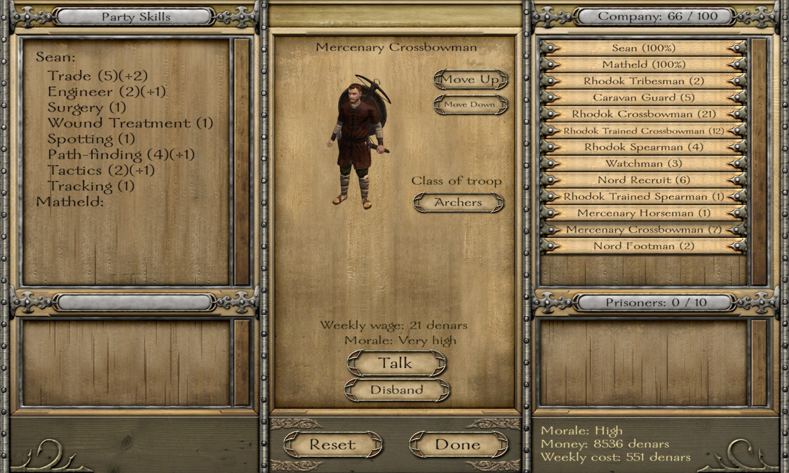
This is going to be a very rough recovery.
View the plaintext version here